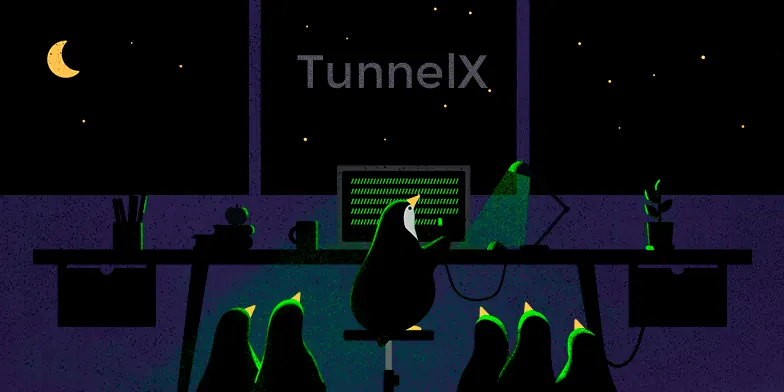
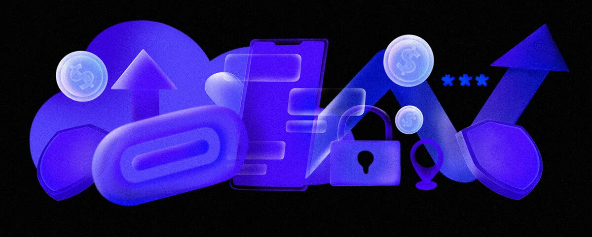

Всем нам знакомы ограничения и контроль в интернете. В TunnelX мы выбираем свободу — и делаем это с помощью передовых технологий, обеспечивая вам быстрый и стабильный доступ к сети.
- VLESS — современный прокси-протокол для быстрого соединения.
- TCP, XHTTP, gRPC, XTLS — гарант стабильного и надежного соединения.
- Reality — передовая технология для приватности в сети.
С нами ваш доступ к интернету остаётся быстрым, удобным и надёжным — в любой точке мира.
Лучший ВПН для Всех: Геймеров, Стримеров и Путешественников
Геймеры
Ищите лучшие цены на игры.
Путешественники
Доступ к сервисам за границей и стабильное подключение в публичных сетях.
Стримеры
Доступ к стриминговым сервисам без ограничений по скорости.
Удалённые сотрудники
Надёжное подключение к корпоративным сетям.
Пользователи социальных сетей
Доступ ко всем популярным платформам.
Создатели контента
Загружайте контент без ограничений.
Купить VPN — Доступные Цены на Подписку TunnelX
Устройства
- 1 устройство — 0 ₽ за шт.
- 2 устройства — 99 ₽ за шт.
- 4 устройства — 69 ₽ за шт.
- 10 устройств — 48 ₽ за шт.
Часто задаваемые вопросы о VPN TunnelX
Почему Telegram Bot?
Мы выбрали Telegram, потому что это одна из самых интуитивно понятных платформ. Благодаря Telegram боту пользователи могут легко контролировать свои VPN-подключения, получать уведомления и поддержку, а также управлять настройками сервиса прямо в чате. Telegram поддерживает автоматизацию и мгновенную обратную связь, что делает взаимодействие с сервисом простым и быстрым.
Какие устройства поддерживаются?
TunnelX поддерживает устройства на Android, iOS, macOS, Windows, AppleTV, AndroidTV, Linux. Вы можете легко настроить VPN на своём телефоне, планшете, компьютере, ноутбуке и ТВ.
Как подключаться?
Подключение к TunnelX не требует сложных действий. Все подробные инструкции в видеоформате находятся в нашем Telegram боте. В течение минуты вы сможете настроить VPN на своём устройстве.
Есть ли ограничения на трафик?
В TunnelX нет никаких ограничений на использование трафика.
Не смогут ли видеть мои действия в интернете?
С TunnelX вы можете быть уверены, что ваша конфиденциальность надёжно защищена. Мы используем современные протоколы, которые обеспечивают вашу приватность без потери скорости.
Нужно ли что-то скачивать?
Для полноценного подключения вам потребуется установить одно из предложенных нами приложений. Они перенаправляют весь ваш интернет-трафик через сервера TunnelX, работая на всем устройстве, а не только в браузере, как это делают расширения. Это программы с открытым исходным кодом, не содержат рекламы и не ведут логирования ваших данных, гарантируя анонимность. Установка проста и занимает не более минуты, после этого вы получаете надёжный сервис без дополнительных действий с вашей стороны.
Почему TunnelX платный?
TunnelX обеспечивает высокую скорость и стабильность, предлагая надёжное VPN-соединение. Для этого мы используем современные протоколы и поддерживаем высококачественные серверы, что требует определённых ресурсов. Оплата за сервис помогает нам поддерживать работу и развитие платформы, включая улучшение её функционала и поддержку пользователей.
Какие есть способы оплаты?
В настоящее время мы принимаем оплату через любые банковские карты РФ. В будущем планируется добавление возможности оплаты через криптовалюты и Telegram Stars.
Чем TunnelX отличается от других VPN-сервисов?
TunnelX выделяется своей скоростью и надёжностью. Мы стараемся сделать наш сервис как можно более удобным: настройка через Telegram бота в 3 клика, поддержка всех устройств, а также современные протоколы подключения. Сервис подходит для всех типов пользователей.
Что делать при технических проблемах?
Если у вас возникли вопросы или проблемы с использованием TunnelX, вы всегда можете обратиться в нашу службу поддержки через Telegram бота. Мы гарантируем быстрый и качественный ответ на все запросы.